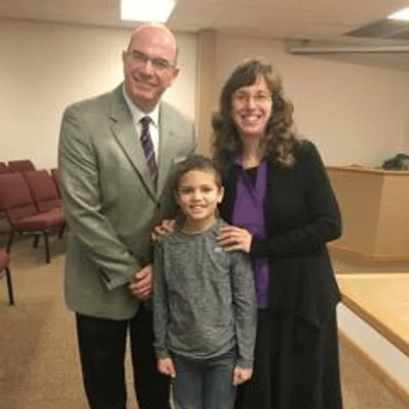
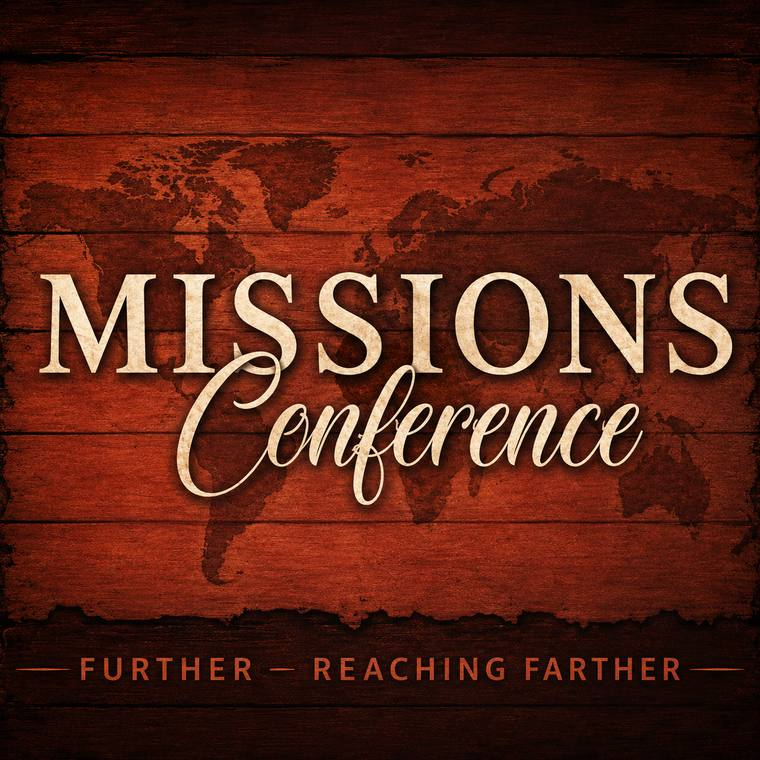

Our global mission is an extension of our local one: to reach the world from Roanoke, Indiana.

Bus Ministry
Three bus routes go into Fort Wayne every Sunday.

Missions
We support missionary families and endeavors around the world. Our Ladies' Missionary Fellowship meets once a month on Monday evening at 7:00 PM.